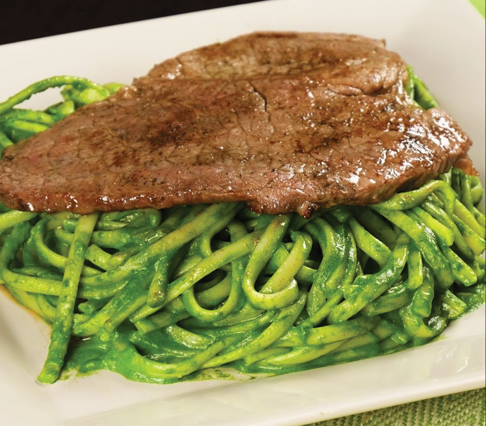

Tallarines Verdes

Descripcion del plato
¡Los Tallarines Verdes con bistec apanado son un clásico de nuestra gastronomía! Delicioso resultado de la fusión
del pesto italiano con ingredientes peruanos. ¡Disfruta este popular plato criollo con el sabor de Comino con
Pimienta!
Preparación: 1 hora 40 minutos
Cocción: 40 minutos
Porciones: 4
Ingredientes
- 500 g de fideos spaguetti
- 500 g de espinacas
- 600 g de albahaca
- ¼ de taza de aceite de oliva
- 1 taza de leche evaporada
- 150 g de queso fresco
- ½ cebolla roja picada en trozos
- 1 taza de nueces
- 3 cdas. de queso parmesano rallado
- 4 bistecs
- 2 Hojas de Laurel Sibarita
- 1 ¼ cda. de Ajo Siba
- Comino con Pimienta Sibarita al gusto
- Pimienta Sibarita al gusto
- Sal al gusto
- 1 taza de pan rallado
- ½ cdta. de mostaza
- ½ cdta. de sillao
- 4 cdas. de aceite vegetal
Pasos
- Realizar una mezcla con sal y Comino con Pimienta Sibarita al gusto, ½ cdta. de Ajo Siba, la mostaza y el
sillao. Untarla en los bistecs por ambos lados. Dejar que se impregnen los sabores y reservar.
- Mientras tanto, en una olla con agua hirviendo agregar un chorro de aceite vegetal, un puñado de sal y las
Hojas de laurel Sibarita. Poner a cocinar los tallarines por 10 minutos. Cuando estén listos, escurrirlos y
reservar.
- Para hacer el apanado: en una tabla de picar echar un poco de pan rallado, sobre él poner cada bistec,
cubrirlos con más pan rallado e ir aplastándolos con ayuda de un martillo de cocina de manera que aumenten
su tamaño. Reservar.
- En una sartén, calentar el aceite de oliva y saltear la cebolla roja junto con el Ajo Siba y una pizca de
sal. Agregar poco a poco las hojas de espinacas y albahaca e ir mezclando hasta que reduzcan su volumen.
- Verter esta preparación en el vaso de la licuadora. Agregar las nueces, el queso fresco, el queso parmesano
y la leche evaporada y licuar. Condimentar con sal y Pimienta Sibarita al gusto.
- Mezclar los tallarines con la salsa verde. Reservar.
- En una sartén con abundante aceite caliente freír los bistecs apanados de 3 a 4 minutos.
- Servir los Tallarines verdes junto con el bistec apanado y decorar con queso parmesano rallado.
¡Disfruta de unos Tallarines Verdes con bistec apanado son muy sabrosos! Con Sibarita puedes convertir el menú
del día en un plato muy especial.
Volver al Inicio